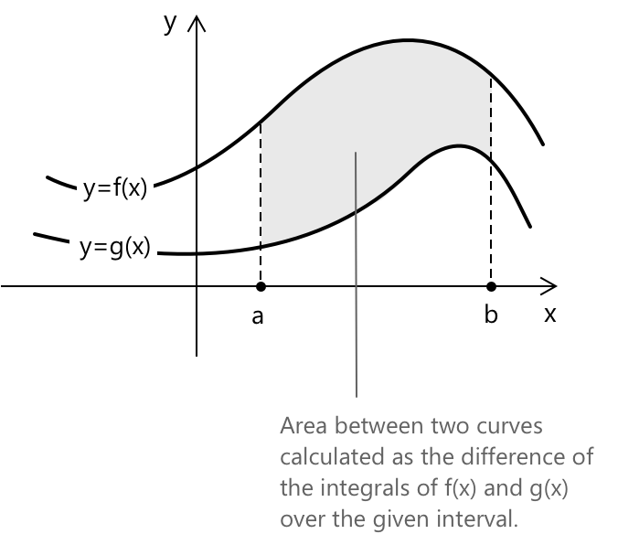
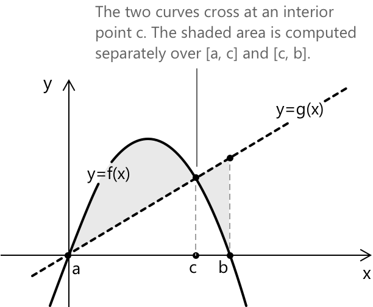
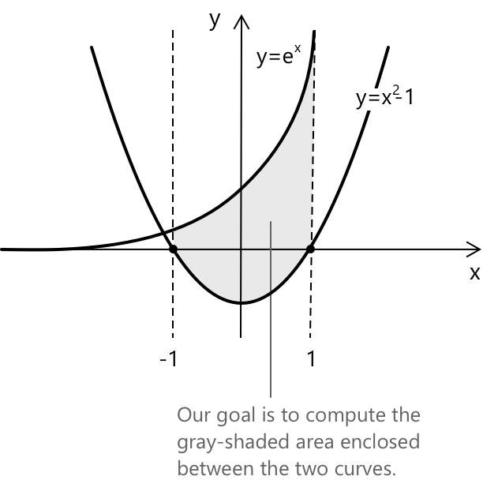

Обчислення площ за допомогою інтегрування
Площа між двома кривими за допомогою визначених інтегралів
Спираючись на концепцію визначених інтегралів, які вимірюють площу між кривою та віссю x, ми можемо розширити цю ідею для знаходження площі, обмеженої двома кривими. Нехай \( f(x) \) та \( g(x) \) будуть двома неперервними функціями, визначеними на одному й тому самому проміжку \([a, b]\), такими що \( f(x) \geq g(x) \) для кожного \( x \in [a, b] \), і припустимо, що їхні графи обмежують область. Площа цієї області задається формулою:
\[ A = \int_a^b [f(x) – g(x)] \, dx \tag{1} \]
Оскільки і \( f \), і \( g \) є неперервними на \([a,b]\), їхня різниця \( f(x) – g(x) \) також є неперервною на тому самому проміжку. Неперервна функція на замкненому та обмеженому проміжку є інтегруемою за Ріманом. Отже, функція \( f(x) – g(x) \) є інтегруемою на \([a,b]\), і площа між двома кривими є добре визначеною через визначений інтеграл.
Ми хочемо обчислити площу сірої заштрихованої області між кривими \( f(x) \) та \( g(x) \):

Інтуїтивно ми бачимо, що площа \( A \) визначається як різниця між площею під кривою \( f(x) \) та площею під кривою \( g(x) \). Іншими словами, формально:
\[ A = \int_a^b f(x) \, dx \,\,- \int_a^b g(x) \, dx \]
Завдяки лінійності інтеграла, це перетворюється на рівняння \(1\).
Площі між кривими, що перетинаються
До цього ми припускали, що \( f(x) \geq g(x) \) на всьому проміжку \( [a, b] \). Однак у багатьох випадках сам проміжок не є заданим: його визначають дві криві, і першим кроком є знаходження точок їхнього перетину. Щоб знайти точки перетину, прирівняйте \( f(x) = g(x) \) і розв'яжіть відносно \( x \). Розв'язання будуть границами інтегрування.
Після того як проміжок відомий, дві криві можуть перетнутися всередині нього, що означає, що \( f(x) \) та \( g(x) \) змінюють своє відносне положення в деякій внутрішній точці \( c \). Коли це стається, підінтегральна функція \( f(x) - g(x) \) змінює знак, і один інтеграл по \( [a, b] \) призведе до того, що площі вище і нижче осі x взаємно знищаться, що дасть неправильний результат.
Правильний підхід полягає в тому, щоб розділити проміжок у кожній точці перетину та інтегрувати окремо по кожному підпроміжку, завжди віднімаючи нижню криву від верхньої:
\[ A = \int_{a}^{c} [f(x) – g(x)] \, dx + \int_{c}^{b} [g(x) – f(x)] \, dx \]
Компактний спосіб записати це, не відстежуючи, яка крива знаходиться зверху:
\[ A = \int_{a}^{b} |f(x) – g(x)| \, dx \]

Модуль гарантує, що кожна частина площі рахується як додатна, незалежно від того, яка функція є більшою на цьому підпроміжку.
Формула \( A = \int_a^b |f(x)-g(x)|\,dx \) є правильною за умови, що всі точки перетину двох кривих включені до границ інтегрування. Модуль забезпечує, щоб різниця між двома функціями завжди була додатною, так щоб жовна частина обмеженої області не знищилася, коли криві змінюють своє відносне положення.
Приклад 1
Припустимо, ми хочемо знайти площу, обмежену кривими \(y_1 = e^x\) та \(y_2 = x^2 - 1\) на проміжку \( x \in [-1, 1] \). Графічно ми маємо наступну ситуацію:

Щоб обчислити площу, ми використаємо рівняння \((1)\) і складемо наступний визначений інтеграл:
\[ A = \int_{-1}^{1} \left[ e^x – (x^2 – 1) \right] \, dx \]
Розв'язуючи інтеграл, отримаємо:
\[ \begin{aligned} A &= \int_{-1}^{1} \left[ e^x - x^2 + 1 \right] \, dx \\ &= \left[ e^x – \frac{x^3}{3} + x \right]_{-1}^{1} \\ &= \left( e - \frac{1}{3} + 1 \right) - \left( e^{-1} + \frac{1}{3} - 1 \right) \\ &= e – \frac{1}{e} + \frac{4}{3} \end{aligned} \]
Отже, площа між двома кривими дорівнює:
\[ A = e - \frac{1}{e} + \frac{4}{3} \]
Приклад 2
Знайти площу області, обмеженої кривими \(f(x) = x^3 - 3x\) та \(g(x) = x \). Проміжок не задано. Почнемо з пошуку точок перетину двох кривих, розв'язавши рівняння \( f(x) = g(x) \):
\[ \begin{aligned} x^3 – 3x &= x \\[6pt] x^3 – 4x &= 0 \\[6pt] x(x^2 – 4) &= 0 \end{aligned} \]
Розв'язками є \( x = -2 \), \( x = 0 \) та \( x = 2 \). Це межі інтегрування.
Оскільки криві перетинаються в точці \( x = 0 \), перевіримо, яка функція знаходиться вище на кожному підпроміжку. Обчисливши значення при \( x = -1 \), отримаємо:
\[ \begin{aligned} f(-1) &= (-1)^3 – 3(-1) = 2 \\ g(-1) &= -1 \end{aligned} \]
Отже, \( f(x) \geq g(x) \) на \( [-2, 0] \). За симетрією, \( g(x) \geq f(x) \) на \( [0, 2] \).
Тепер відповідним чином розіб'ємо інтеграл:
\[ A = \int_{-2}^{0} [f(x) – g(x)] \, dx + \int_{0}^{2} [g(x) – f(x)] \, dx \]
\[ A = \int_{-2}^{0} (x^3 – 4x) \, dx + \int_{0}^{2} (4x – x^3) \, dx \]
Обчислюючи перший інтеграл, маємо:
\[ \begin{aligned} \int_{-2}^{0} (x^3 - 4x) \, dx &= \left[ \frac{x^4}{4} – 2x^2 \right]_{-2}^{0} \\ &= \left(0\right) - \left(\frac{16}{4} - 2 \cdot 4\right) \\ &= 0 - (4 - 8) \\ &= 4 \end{aligned} \]
Обчислюючи другий інтеграл, отримаємо:
\[ \begin{aligned} \int_{0}^{2} (4x – x^3) \, dx &= \left[ 2x^2 – \frac{x^4}{4} \right]_{0}^{2} \\ &= \left(2 \cdot 4 – \frac{16}{4}\right) – 0 \\ &= 8 – 4 \\ &= 4 \end{aligned} \]
Загальна площа дорівнює:
\[ A = 4 + 4 = 8 \]
Симетрія результату не є випадковою: \( f(x) = x^3 - 3x \) є непарною функцією, а дві області є дзеркальними відображеннями одна одної відносно початку координат.
Вибрана література
-
New York University, S.R.S. Varadhan. Area Between Curves
-
University of Washington, A. Nichifor. Areas Between Curves: Applications of Integration
-
University of Washington. Area Between Curves
-
UC Davis, D. Kouba. Areas of Enclosed Regions
-
Columbia University, A. Vizeff. Applications of Integration